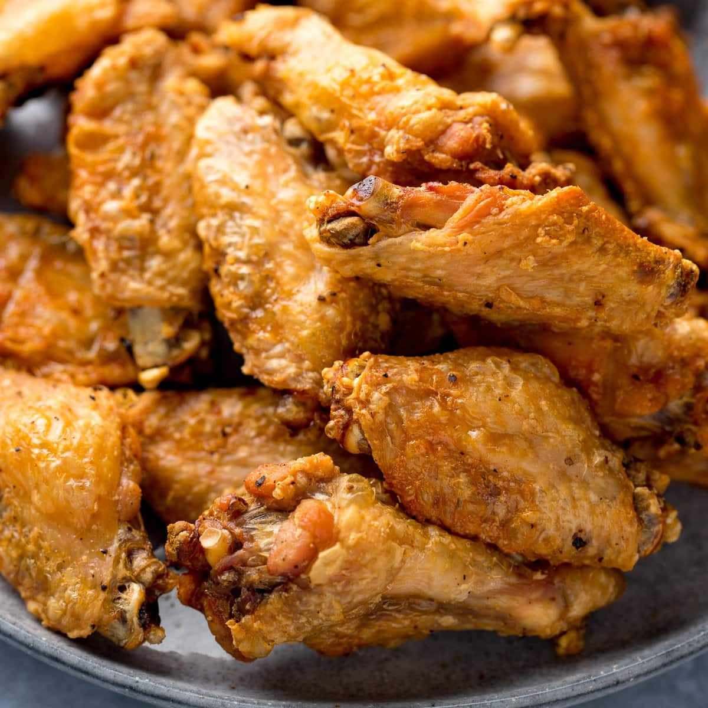

Crispy Baked Chicken Wings

Description
Ingredients
- 4 pounds chicken wings
- ½ cup butter
- 2 cloves garlic, minced
- 1 cup grated Parmesan cheese
- 1 tablespoon dried parsley
- 1 tablespoon dried oregano
- 2 teaspoons ground paprika
- 1 teaspoon salt
- ½ teaspoon ground black pepper
Steps
- Preheat the oven to 350 degrees F (175 degrees C). Line a shallow baking dish with aluminum foil and grease lightly.
- Cut off chicken wing tips and discard. Cut between the joints to separate each wing into two pieces.
- Heat butter and garlic in a small saucepan over low heat until butter is melted and garlic is fragrant, 3 to 5 minutes.
- Mix Parmesan cheese, parsley, oregano, paprika, salt, and pepper together in a shallow bowl.
- Dip chicken wing pieces into melted butter mixture, then press into Parmesan mixture to coat all over. Arrange in the prepared baking dish. Drizzle any remaining butter on top.
- Bake in the preheated oven until no longer pink in the center, the juices run clear, and the skin is browned, about 1 hour. An instant-read thermometer inserted into the center should read at least 165 degrees F (74 degrees C).